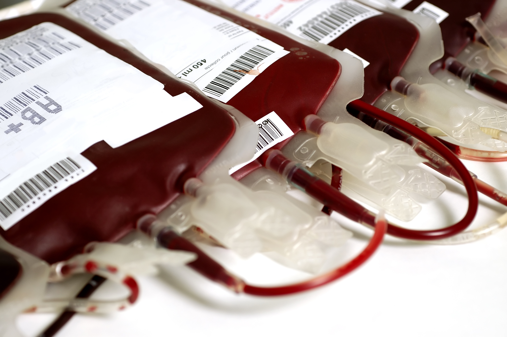
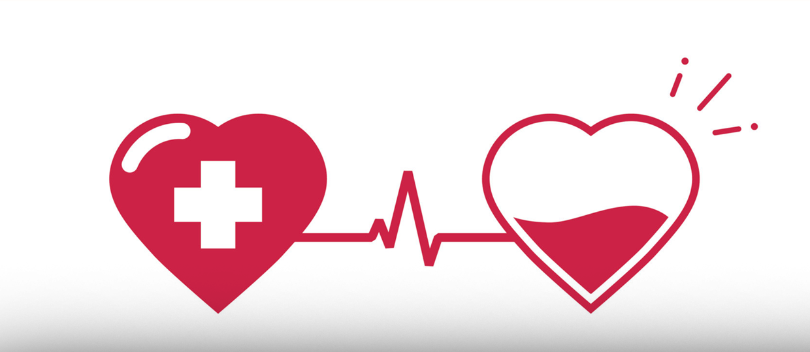
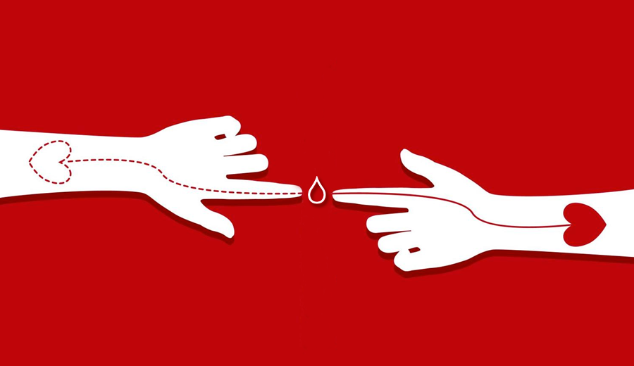

Doação de sangue
Doar sangue
é um ato que ajuda muitas pessoas. Necessitam de sangue pessoas que passam por cirurgias, fazem quimioterapia entre vários outros tratamentos. Como ele não pode ser produzido artificialmente é necessário voluntários para manter os estoques cheios.
Há critérios que permitem ou impedem uma doação. Eles são determinados por normas técnicas do Ministério da Saúde, e visam à proteção ao doador e a segurança de quem vai receber o sangue.
Para quem está apto para doar.
Antes de ir doar sangue:
Consuma alimentos leves, não é possível doar em jejum
Evitar alimentos gordurosos no dia da doação
Hidrate-se
Etapas da doação
Recepção e cadastro:
Ao chegar ao local é feito primeiramente um cadastro com dados pessoais e gerais. Lembre-se sempre de levar documento oficial de identidade com foto (RG, carteira de motorista, carteira de trabalho ou passaporte).
Triagem clínica
Após o cadastro ocorre a triagem clínica. Uma entrevista que avalia as condições de saúde da pessoa que vai doar e os riscos para a pessoa que vai receber. Na triagem clínica, são feitas perguntas a respeito do estado de saúde do candidato à doação de sangue. A triagem clínica é utilizada, pois existem questões que podem ser identificadas na entrevista clínica e não podem ser detectada por testes laboratoriais.
Coleta
A coleta do sangue dura em torno de 15 minutos. Ela é feita com material esterilizado, descartável e não apresenta nenhum risco para a pessoa que está doando.
Depois de doar sangue
Faça um pequeno lanche e hidrate-se. É importante para o doador continuar se sentindo bem durante o dia.
É importante também evitar esforços físicos exagerados por pelo menos 12 horas, não fumar por cerca de 2 horas, evitar bebidas alcóolicas por 12 horas e não dirigir veículos de grande porte, trabalhar em andaimes, praticar paraquedismo ou mergulho.


